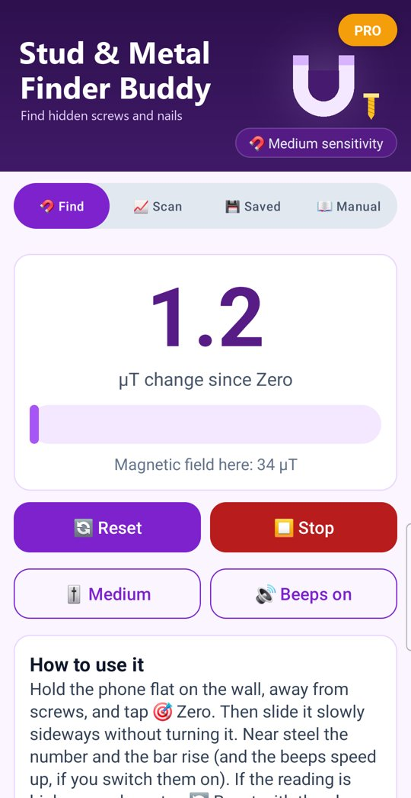
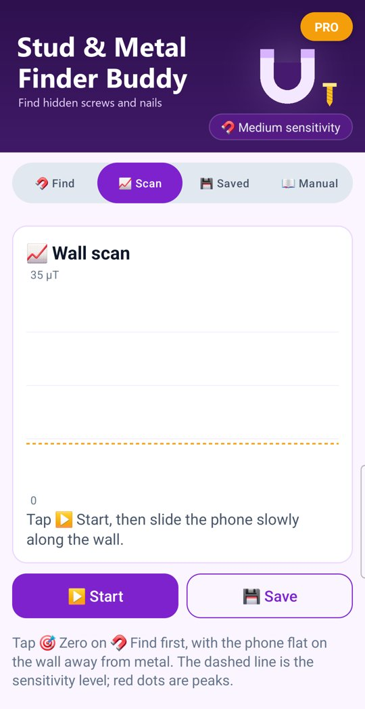
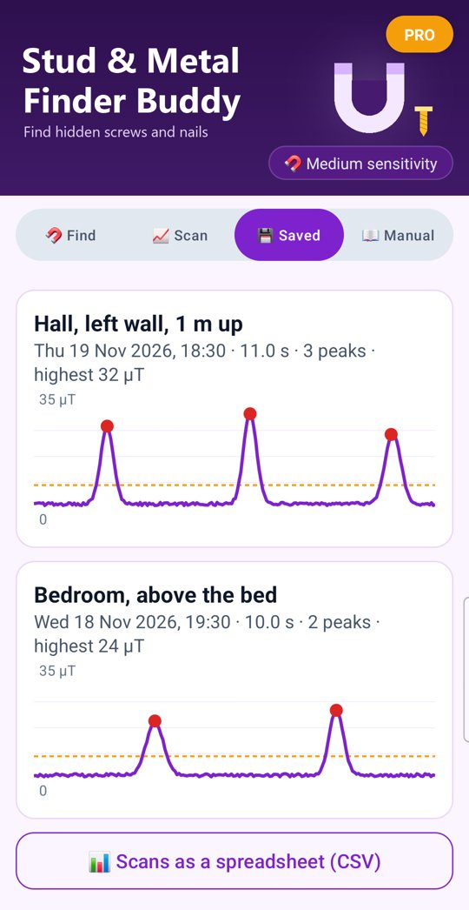
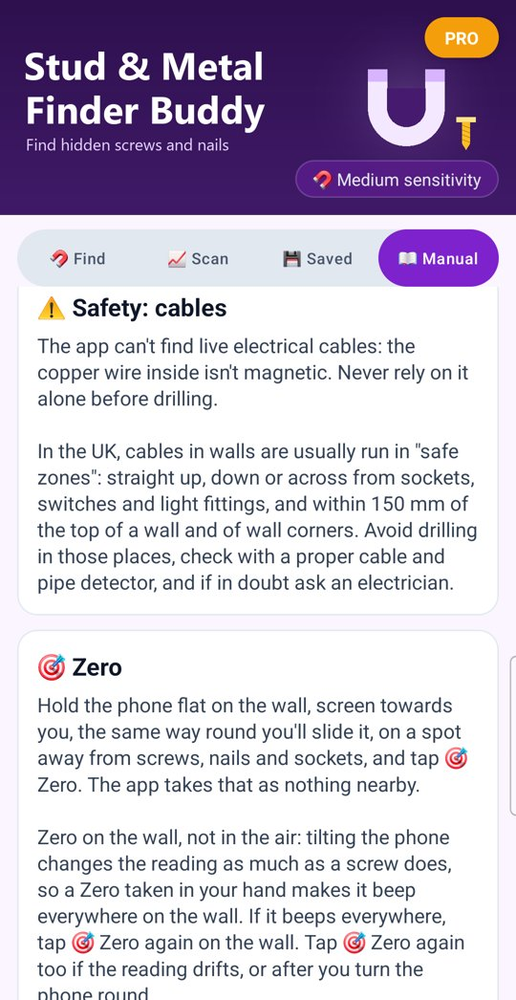

Everything below is the same text as the Manual in the app (📖 Manual tab).
Your phone has a magnetic sensor (the one the compass uses). Iron and steel nearby bend the magnetic field, and the app shows how much the field has changed since you tapped 🎯 Zero, in microtesla (µT).
It finds iron and steel: screws and nails in studs and joists, steel lintels, metal brackets and some steel pipes. It does not find wood, plastic, copper or aluminium.
1. When you open the app it waits: the reading shows 0.0, the sensor is off and nothing beeps.
2. Unplug the charger and take the phone out of any magnetic case (the app warns you if it's charging).
3. Hold the phone flat on the wall, away from screws and sockets, and tap 🎯 Zero. It switches the sensor on and takes about 2 seconds to zero: keep the phone still.
4. Slide the phone slowly along the wall without turning it. Near steel the number and the bar rise (and it beeps, if you switch beeps on). The screen stays on while you search.
5. If the reading drifts, or you turn the phone round, tap 🔄 Reset with the phone flat on the wall.
6. Tap ⏹️ Stop when you've finished: the sensor switches off and the reading goes back to 0.0.
7. It also stops by itself when you leave the app, or if nothing is touched for 5 minutes, so a forgotten phone doesn't run the battery down.
The app can't find live electrical cables: the copper wire inside isn't magnetic. Never rely on it alone before drilling.
In the UK, cables in walls are usually run in "safe zones": straight up, down or across from sockets, switches and light fittings, and within 150 mm of the top of a wall and of wall corners. Avoid drilling in those places, check with a proper cable and pipe detector, and if in doubt ask an electrician.
Hold the phone flat on the wall, screen towards you, the same way round you'll slide it, on a spot away from screws, nails and sockets, and tap 🎯 Zero. The app takes that as nothing nearby. Until you tap 🎯 Zero the reading stays at 0.0 (also each time you come back to the app). While you search, 🔄 Reset zeroes again where the phone is, and ⏹️ Stop ends the search: the reading goes back to 0.0 and nothing is read until the next 🎯 Zero.
Zero on the wall, not in the air: tilting the phone changes the reading as much as a screw does, so a Zero taken in your hand makes the reading high everywhere on the wall. If it's high everywhere, tap 🔄 Reset with the phone flat on the wall. Tap 🔄 Reset too if the reading drifts, or after you turn the phone round.
Unplug the charger first: the charging current runs right past the sensor and makes the reading wander. Keep the phone away from magnetic cases, speakers and other phones.
Hold the phone flat against the wall, screen towards you, and slide it slowly sideways without turning it. When the bar rises (and the beeps speed up, if they're on), go back and forth to find where the reading is highest: the metal is right behind that spot of the phone.
The sensor is in one place inside the phone, often near the top. To find it, hold a screw or a key against the back of the phone and move it around: the reading jumps most over the sensor.
A stud wall has upright timbers (studs), usually 400 mm or 600 mm apart, centre to centre. The plasterboard is fixed to each stud with screws or nails about every 300 mm going up.
Find one fixing, then check above and below it in a straight line: a row of fixings means a stud. The next stud is usually 400 or 600 mm along. The sensor reaches about 2–3 cm into the wall, so it finds fixings just under the surface best.
Low only reacts close to big steel; High reacts to small screws but also to more drift. Medium suits most walls. Beeps are off at first: tap 🔇 Beeps off to switch them on, and 🔊 Beeps on to switch them off again. The beeps start when the change goes over the sensitivity level and get faster as it rises.
The 📈 Scan tab draws a graph of the change as you slide the phone along a wall. Each peak is a fixing. Tap ▶️ Start, slide steadily, then ⏹️ Stop. Save the scan with a note (for example "Hall, left wall, 1 m up") to look at it again later, or share all scans as a spreadsheet.
Free: the live finder with the strength bar, beeps, sensitivity and Zero. No ads.
Pro (one payment, no subscription): the wall scan graph with peak marks, saved scans with notes, and scans as a spreadsheet (CSV).
Tap GO PRO at the top. Restore purchase gets Pro back on a new phone with the same Google account.
No account, no sign-in, and no ads. The app reads only the phone's magnetic sensor, needs no permissions, and keeps saved scans only in its own storage on this phone. Stud & Metal Finder Buddy has no servers. A spreadsheet only leaves the phone when you share it yourself.
Google Play handles the Pro purchase.
Stud & Metal Finder Buddy v1.1 (Build 2)
Publisher: AppStack Studio
| Question | Many metal finder apps | Stud & Metal Finder Buddy |
|---|---|---|
| Readings | A needle with no units | The real change in microtesla (µT) since you tapped Zero |
| Safety | Claims to find wires | Clear about what it can't find (live cables) and the UK cable zones |
| Price | Ads on every screen | Free finder; Pro is one payment for life (no subscription) |

1. Finder
The live change since Zero, with the strength bar and beeps.

2. Wall scan (Pro)
Slide along the wall and watch the graph for peaks.

3. Saved scans (Pro)
Each peak is a screw or nail: a row of them is a stud.

4. Safety and tips
Where cables run and how to get a steady reading.
Screenshots: Stud & Metal Finder Buddy 1.0 on a Samsung Galaxy S20. The saved scans are sample scans.